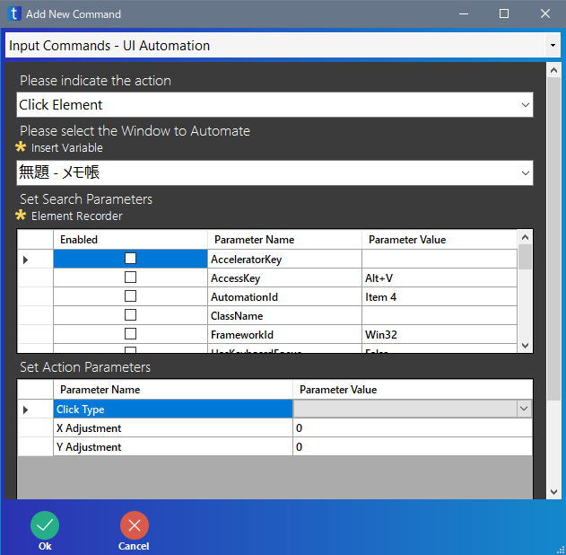

UI Automation でクリックさせる方法
taskt の公式ドキュメントなどにも詳細が載っていない UI Automation 命令でソフト・画面の要素をクリックさせるための手順です。
今回は、メモ帳のメニューにある 表示(V) をクリックさせます。
まず、taskt とは別にメモ帳を実行します。

次に、taskt の Input Commands の UI Automation をダブルクリックします。
今回はクリックさせるので、Please indicate the action は Click Element にします。
次に、Set Search Parameters の下にある Element Recorder をクリックします。
element recorder が別の画面で表示されるので、 の左にある ▼ をクリックし、無題 - メモ帳 を一覧の中から選択します。
Stop Recording on First Click はチェックを外しておいた方が良い、気がします。
次に、 をクリックします。
メモ帳の画面が手前に表示されます。
このとき、パソコンの画面の右下に element recorder という別の画面も表示されています。
メモ帳のクリックさせたい 表示(V) をクリックします。
もし、間違えて別の場所をクリックしてしまったときは、再度 表示(V) をクリックしてください。
右下の画面にクリックしたものの情報が表示されるのですが、あまり気にしなくてよいです。
この状態で F2 キーを押します。
element recorder の画面が閉じ、UI Automation 命令の画面が表示されます。
クリックした内容に応じて、Set Search Parameters の内容が表示されています。
また、Please select the Window to Automate は自動的に「無題 - メモ帳」に変わっています。

Set Search Parameters で何を選ぶかは慣れが必要ですが、一般的には AutomationId か、LocalizedControlType と Name の組み合わせのどちらかになるかと思います。
AutomationId を検索条件にするには、AutomationId の Enabled にチェックを入れます。
検索条件を LocalizedControlType と Name の組み合わせにするには、この 2 箇所の Enabled にチェックを入れます。
最後に、Set Action Parameters の Click Type を Left Click にします。
OK をクリックして終了です。
これで 1 箇所クリックさせるための設定ができました。
あとは実際にスクリプトを動かしてみて、正しく動作するかを確認してください。
複数のボタンなどを連続してクリックさせるようなスクリプトを作りたいときは、毎回毎回この作業をやるのは面倒くさいので、はじめに作った UI Automation 命令をコピペし、要素の検索条件を Inspect ツールなどで調べ、Set Search Parameters の必要な個所を書き換えた方が良いでしょう。
また、UI Automation 命令は 1 つ作るのにも手間がかかり、特定条件下でうまく動作しないこともあるので、個人的には Send Keystrokes 命令によるキーボード操作を使った方が良いと思います。
今回の例ならば、Send Keystrokes 命令で「%v」を指定すれば、同じ動作をします。